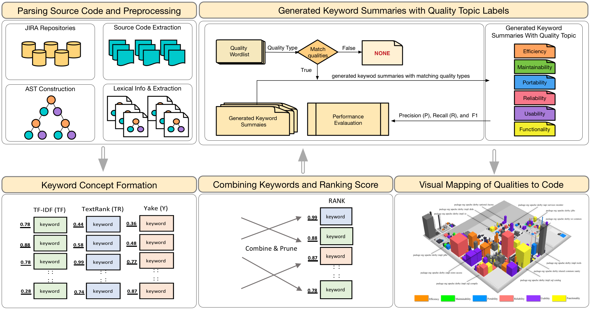

Quality Concerns Explained: Generating Rationals via Code Change History
Project Description. In most product-oriented approaches a complete analysis of requirements is performed by considering functional requirements while neglecting quality concerns until the implementation stage. Consequently, quality concerns are implicitly and without proper analysis are implemented in code. This problem becomes even more evident for OSS projects since they typically emerge from frustrating experiences of OSS contributors when a bug is communicated or new feature is added. Because these qualities lack a formalized requirement, they tend to be implemented with no particular structure, scattered and/or tangled in code. Unlike functional requirements, which can be achieved by relatively localized changes made to the data or control flow, this is not the case with quality concerns in OSS systems. Quality concern are often times bounded by system-wide constraints that impact several classes across the system’s architecture. For example, an availability requirement discovered later in the implementation stage may affect the entire architecture unfavorably. Similarly, adding or changing qualities pertaining to security or performance may require system-wide changes due to their dependencies. In this paper we present an NLP based approach for detecting quality-related concerns latent in code. Furthermore, we provide a holistic view of their role at the low level implementation by visualizing them in code. We introduce a tool named SoftQualDetector which utilizes three unsupervised techniques for extracting a rich set of semantic, structural, and feature-based keywords to form short keyword summaries extracted from code. These keyword summaries are generated in the context of informativeness, importance, specificity, and relevance to domain. SoftQualDetector is compared against six baseline approaches including against the state-of-the-art LDA. Results indicate that SoftQualDetector outperforms these approaches significantly. We highlight several benefits of SoftQualDetector if put in practice. We provide examples where SoftQualDetector can contribute towards enhancing developers' productivity by communicating requirement knowledge, scoping requirement knowledge, and visualizing quality concerns.
